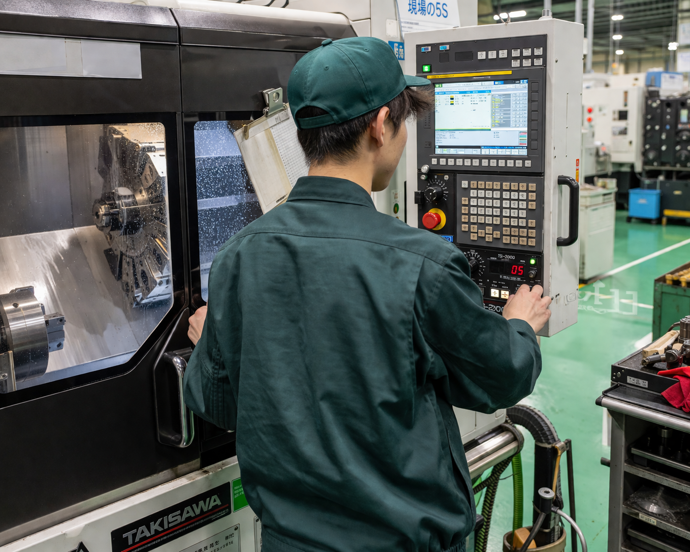
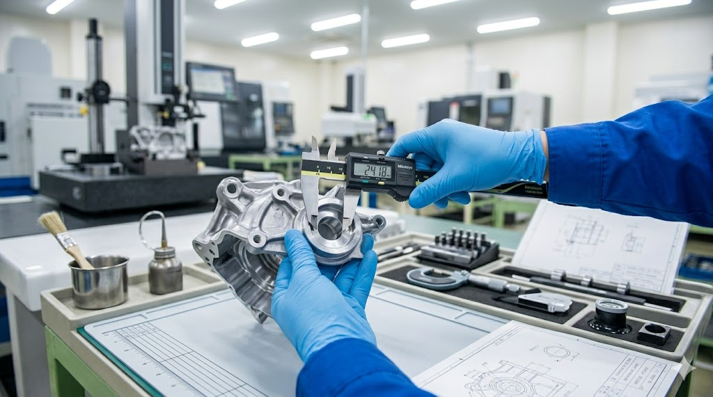

- TOP
- 仕事を知る

Work
ー What we do ー
Our Work
AT-Tのものづくりは、溶けた鉄を型に流し込む「鋳造」から始まり、精密に削り出す「機械加工」、そして一つひとつ品質を確かめる「検査」まで、すべての工程を一つの工場で完結させます。
工程を通して見えるから、自分の手が何を生み出しているのか、すべて分かる。それが、ここで働く誇りです。
01Process 01
高温で溶かした鉄を、精密な金型に流し込み、冷やして固める。力仕事に見えて、実は温度・速度・タイミングをmm単位でコントロールする繊細な工程です。熟練者の技と最新設備で、世界基準の部品を生み出します。
鋳造技能設備オペレーション品質管理
02Process 02
鋳造で形になった部品を、0.01mm単位で削って仕上げます。CNCマシンや自動化ラインを駆使した高精度加工。数字の世界だからこそ、機械を操る人の判断が結果を左右します。
機械加工CNCオペレーション工程設計
03Process 03
ブレーキディスクは、クルマの安全に直結する部品。寸法検査・外観検査・強度試験を何重にもかけて、ひとつでも基準を満たさないものは世に出しません。この工程が、私たちの誇りです。
寸法検査品質保証測定技術Job Categories
ものづくりの現場を動かす
鋳造・機械加工・検査の各現場で、実際に製品を生み出す中核メンバー。高校卒から技能を磨き、リーダー・班長へとキャリアアップ。
工場を進化させる
設備の改善・新ライン立上げ・自動化推進など、工場全体の生産性を設計する技術職。機械・電気・制御の知識を活かせます。
世界基準の品質を守る
お客様に渡る全製品の品質を保証する最後の砦。測定・試験・不具合解析を通じて、AT-Tブランドを支えます。
会社を支えるバックオフィス
総務・人事・経理・調達など、事業運営を支えるバックオフィス。アイシングループ全体との連携もあり、視野が広がります。
DXで現場を強くする
工場の生産管理システム、データ活用、社内ITインフラの運用まで。ものづくり企業のDX推進を担う専門職。
24時間365日、工場を止めない
生産設備の予防保全、故障対応、改善改造を担当。機械に強くなりたい、手を動かす専門性を極めたい人に。
Environment
未経験入社でも安心。座学+OJTで技能を身につけ、階層別・職種別の研修で継続的に成長できます。アイシングループ全体の教育制度も活用可能。
アイシングループの投資力で、毎年のように最新機械が入る工場。CNCマシン、ロボット、自動化ラインなど、最先端の設備で働けます。
全員で「ゼロ災」を目指す安全文化。保護具・環境整備・KY活動・安全衛生委員会まで、仕組みと文化の両面で支えています。
社員寮・食堂・シャワールーム完備。年間休日121日・有給取得率91%・賞与4.7ヶ月・転勤なし。プライベートも大切にできます。